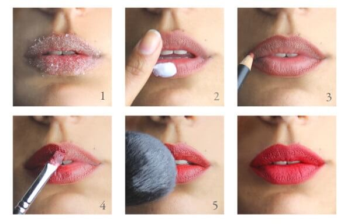
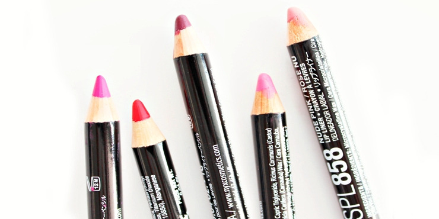

Si apenas estás comenzando en el mundo del maquillaje y te intriga saber a qué se refieren cuando los especialistas o las beauty bloggers hablan de contorno, entonces es momento de que leas este artículo que hemos preparado para ti con toda la información para que logres entender qué es y cómo esta técnica puede darte un súper must para cualquier ocasión.
La iluminacion
Las mujeres y artistas de maquillaje tienen varias razones para amarlo, ya que visualmente le aporta volumen y dimensión a los rasgos y transporta a un primer plano las facciones donde se coloca.
Es ideal para resaltar lo mejor de nuestros atributos y darle más armonía a nuestra cara. Por ejemplo, con él podemos crear la ilusión de una nariz más afilada, de unos ojos más grandes y luminosos, de unos labios más jugosos e incluso, ¡de unos pómulos prominentes de pasarela!
Sin duda el maquillaje tiene increibles trucos que mostrar, pero con el pasa de tendencias surgen y surgen mas trucos, a continuacion dejaremos otros trucos los cuales con mas generales, pero aun asi sirven demasiado.
Si queremos que nuestro labial maximice su duración y que no transfiera, una pequeña técnica para conseguirlo es, una vez aplicado el labial, colocar una capa de un pañuelo de papel o un trocito de papel higiénico sobre los labios, después, con una brocha aplicaremos sobre el papel una capa de polvos translúcidos. ¿Fácil, verdad?

Los labiales fijos normalmente suelen resecar el labio en demasía, por ello, uno de los trucos para evitar esa sensación de labio acartonado es exfoliar el labio un ratito antes de la aplicación del labial. Podemos exfoliar nuestros labios con un exfoliante de labios de venta en tiendas de cosmética, o también utilizando un exfoliante casero a base de miel y azúcar. Otra opción es hacerlo aplicando vaselina y ayudándonos de un cepillo de dientes dibujando pequeños círculos por toda la superficie del labio. También será una ayuda extra aplicar un bálsamo labial diez minutos antes de utilizar nuestro labial fijo.
Si tenemos un perfilador de labios cuyo color nos encanta, podríamos utilizar este como alternativa a un labial mate aplicándolo en todo el labio y no solo en los bordes.
Un producto que utilizan la gran mayoría de los maquilladores para que ciertos labiales no transfieran, y se extiendan más allá de la línea que delimita el labio, es una perfilador de labios de cera, el cual es incoloro, pero actuará de barrera para el labial.

Para hacer que nuestros labios se vean más voluminosos, existen diversas técnicas. Una de ellas es perfilar los labios con un lápiz de cejas de color claro muy suavemente.
Un poco de la historia del maquillaje:
A continuacion te mostramos una tabla que muestra las mejores marcas de maquillaje y sus mejores productos.